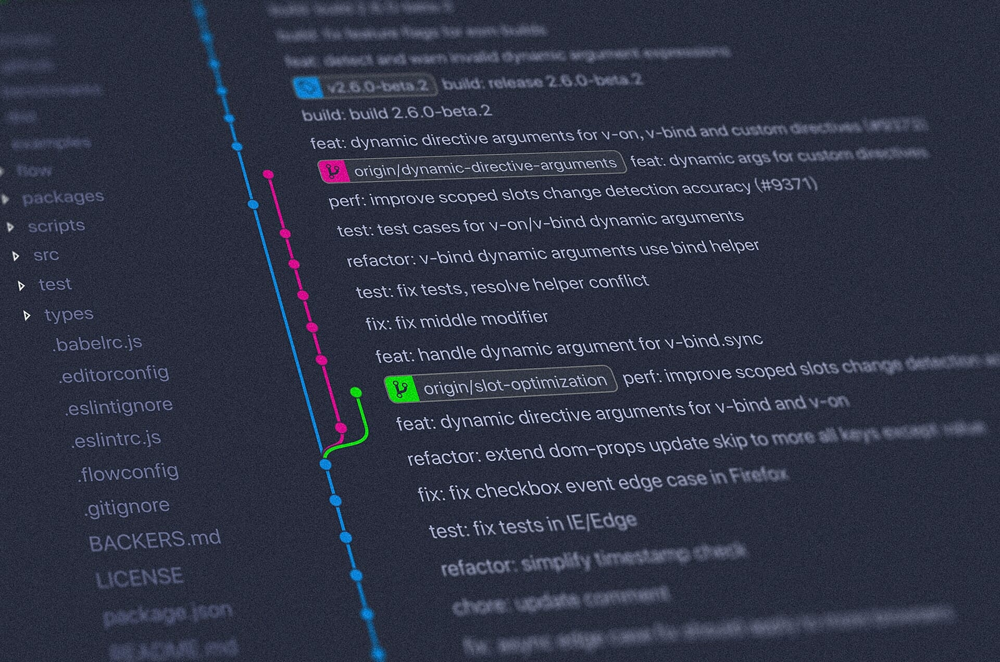

Code Review（代码审查）很多团队都会做，效果如何不好说。如果你能轻易地从一堆出自正经团队之手的代码里找出几个低级错误，往往意味着团队管理者长期忽视了 Code Review 的重要性。
根据经验，匆匆应付功能实现和漏洞修复而将 Code Review 流于形式的团队不在少数。当然，每个人都能列举一大堆“客观原因”，而且每一条理由听起来都是那么的有说服力。然而，没做好就是没做好，狡辩只会让场面变得更加恶心。
What（什么是 Code Review）
A code review is the process of examining written code with the purpose of highlighting mistakes in order to learn from them. — Techopedia
这是目前我见过对 Code Review 最言简意赅的定义。其实怎么描述并不重要，重要的是我们要达到什么样的目的。
Why（为什么要做 Code Review）
提高代码质量是程序员端稳饭碗、少挨点儿骂的最有效途径。其实 Code Review 就是很好的相互切磋、共同进步的机会，效果要比独自埋头干啃《21 天精通 ×××》之类的“宝典”好得多。当然，前提是目的明确、态度端正。
Code Review 主要目的就两个：
查错
Code Review 不是用来查找低级错误的，而是参与者以提交者以外的视角阅读和审视代码，尽可能地找到逻辑上的问题。
学习
与其说 Code Review 重在找到问题，不如说其核心目的在于营造团队学习氛围、提升成员对软件品质的追求。我经历过不少团队，为了营造学习氛围，生拉硬拽地要求成员定期举行技术分享会，结果往往敷衍了事、不了了之。
How（怎样做 Code Review）
下面根据 Code Review 中涉及的主要人物角色来讲讲我推荐的方式。注意，这不是标准答案。
具体划分角色责任之前，我建议每个技术团队都要找到并严格执行适合本团队技术栈的编码规范，甚至包括 IDE 配置和开发环境参数设定等，以确保每位成员都“说着同样的语言”，并减少在命名规则、排版样式等方面的争论，将时间和精力聚焦到对功能实现和业务优化这些实质性的问题上来。
开发小组技术负责人
每一位开发小组技术负责人都应该积极实施并维护 Code Review 机制，要求每位成员在提交代码的时候，都必须经过交叉 Review，也就是每一次代码提交到主干时，都必须经过另一位相同技术领域同事的 Review，否则将被视为提交了与存在编译时错误的代码同等的严重过失。
每次代码提交的交叉 Review，开发小组技术负责人应当随机抽取包括自己在内的任何一位技术人员进行，不要让提交者能够很轻易地预知将会是谁来做自己这一次的 Reviewer，否则很容易变成形式主义。
并且，对于 Feature 实现的 Code Review，开发小组技术负责人应该较为频繁但不定期地进行公开 Review。组织一场会议，召集整个开发小组的成员一起对此次提交的代码进行审查。
提交者
不论 Code Review 是私下的还是公开的，提交者都不能提交任何存在编译时错误的代码，这是非常低级的错误。首先在提交代码之前再次进行编译，是确保即将提交的代码不存在编译时错误的必要步骤。其次，也是很多人容易疏忽的，确保本次新增的本地资源文件都被加入了源代码管理，否则即使本地能编译通过，别人拿到你的代码也依然存在编译时问题。
提交代码之前，自己先diff一下，首先确保代码不存在前面提到的诸如命名、格式等方面的低级错误；然后确定自己对每一处代码变动的理解都非常明确，并且自己已经找不出改进方案；最后确保所有 Hard Code 都已经被移除，这一点可以参考我之前写的《没什么技术含量的 Remove Before Flight》。
提交者在代码被 Review 之前，还应该调整好心态，把别人的询问、质疑、建议、批评，通通视作可能的提升机会，而不要主观上认定自己给出的就是最优解，而别人都是“不明真相的围观群众”。也许别人在不了解背景信息或上下文的情况下，给出了错误的建议，提交者也应当将此作为锻炼思维和口才的友好辩论，而不是玻璃心受到了侵犯似的直接怼回去。
参与者
参与者应该对编码规范了然于心，对于代码中每一处不符合团队现行编码规范的地方都要不厌其烦地标注出来。很多人认为这个无所谓，反正机器最后读的都是 0 和 1——对，机器只认识 0 和 1，所以源代码其实是写给人看的。不管代码由多少人写就，最终看上去如同出自同一人之手，这种代码的阅读体验和效率绝对要比那种百家争鸣式的好得多。
如果是面向对象的编程语言，参与者应当考察提交者对抽象的理解和实践，是否准确以及是否过浅或过深。抽象过浅，看上去往往是大杂烩；抽象过深，读起来显得吃力。对于这两种情况，参与者都可以提出自己的看法和建议，不要抱着“你这不行，听我的”的态度，否则很容易形成对立的情绪，进而影响团队对 Code Review 的积极性。
对于代码实现是否存在改进空间这个问题，参与者应该在阅读新代码时，尽可能全面地去理解问题域、了解需求的具体细节，而不是想当然地抛出质疑和意见，给人以浮躁的印象。如果参与者确定自己清楚地理解了需求和问题，依然对当前的代码实现有改进建议，那么就大胆地提出来，这就是 Code Review 的核心目的！